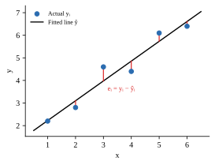
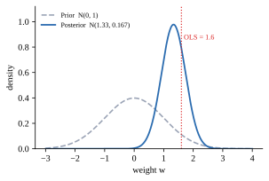

For each example i, the error or residual is the difference between the actual value and the value predicted by the regression model:

Errors are squared so that positive and negative errors do not cancel out, and so that large errors are penalised more heavily.
| Measure | Formula | Note |
|---|---|---|
| RMSE | $\sqrt{MSE}$ | Same units as y; easy to interpret |
| MAE | $\frac1n\sum|y_i-\hat y_i|$ | Less sensitive to outliers |
| R² | $1-\dfrac{SSE}{SST},\ \ SST=\sum(y_i-\bar y)^2$ | Fraction of variance explained; 1 = perfect |
Given: n = 100 examples; SE₁ = 13.33, SE₂ = 3.33, SE₃ = 4.00 (the remaining errors contribute nothing).
Ordinary least squares (OLS) gives one best line. Bayesian regression gives a distribution over all plausible lines.
| Part | Usual choice | Meaning |
|---|---|---|
| Model | $y=w^Tx+\varepsilon,\ \ \varepsilon\sim N(0,\sigma^2)$ | Linear relation plus Gaussian noise |
| Likelihood | $p(y\mid X,w)=N(Xw,\ \sigma^2 I)$ | How well given weights explain the data |
| Prior | $p(w)=N(0,\ \alpha^{-1}I)$ | Belief before data: weights are small, near 0 |
| Posterior | $p(w\mid X,y)=N(m_N,\ S_N)$ | Updated belief after seeing the data |
Model $y=wx$; data $x=(1,2)$, $y=(2,3)$; prior $w\sim N(0,1)$ (α = 1); noise variance σ² = 1.

The prior shrinks the estimate towards 0. In fact the posterior mean (the MAP estimate) equals Ridge regression with $\lambda=\alpha\sigma^2$, so Bayesian regression explains why L2 regularisation works.
| Basis | OLS | Bayesian Linear Regression |
|---|---|---|
| Weights | Fixed single values | Probability distribution |
| Prior knowledge | Not used | Included through the prior |
| Output | Point prediction | Prediction with uncertainty (credible interval) |
| Small data | Overfits easily | Prior regularises; works well |
| Cost | Cheap closed form | More computation (sampling for non-Gaussian priors) |
Advantages: quantifies uncertainty, works with small datasets, built-in regularisation, allows online updating. Disadvantages: choosing a prior is subjective, and computation is heavier for large or non-Gaussian models. Applications: medical and financial forecasting where confidence matters, A/B testing, Bayesian optimisation and sensor calibration.